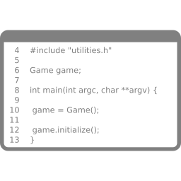

Desenvolvimento Aberto

Dicas de Debug
Igor dos Santos Montagner ( igorsm1@insper.edu.br )
Minha primeira contribuição de código

Dicas para debugar (qualquer coisa)

9 regras de debug
- UNDERSTAND THE SYSTEM
- MAKE IT FAIL
- QUIT THINKING AND LOOK
- DIVIDE AND CONQUER
- CHANGE ONE THING AT A TIME
- KEEP AN AUDIT TRAIL
- CHECK THE PLUG
- GET A FRESH VIEW
- IF YOU DIDN'T FIX IT, IT AIN'T FIXED
1. Understand the system
Nada acontece se não conseguirmos
- Baixar a versão de desenvolvimento
- Instalar todas as dependências
- Compilar nossa própria versão
- Rodar testes na versão do
master
1. Understand the system
Ferramentas importantes:
- Virtual environments: venv, virtualenv, pipenv, conda
- setuptools - development mode
- Debugging
- pdb
- função
breakpoint()(tutorial)
1. Understand the system
Conheça suas ferramentas
- Debugging visual linha a linha
- Stacktrace
- Busca em projeto inteiro
- Ir para definição de função
Debugar usando print é perda de tempo
2. Make it fail
Reproduza seu bug
- Crie um exemplo mínimo que reproduza o bug desejado ou que usaria a feature que quer implementar
- entrada de exemplo e saída esperada vs saída obtida
- Possivelmente isto já foi descrito na issue escolhida.
- Anote elementos que te ajudem a encontrar onde isto ocorre no código (funções usadas, elementos de interface gráfica, mensagens de erro.)
3. Quit thinking and look
Encontre onde está o problema e leia o código com atenção
- Encontre no código onde o bug pode estar
- Comece geral (em qual arquivo está a funcionalidade?) e vá restringindo (em qual função o bug "explode"?)
- Ferramentas de debug são essenciais. Veja o item 1.
- Não atenderei ninguém que esteja debugando só com
print
- Não atenderei ninguém que esteja debugando só com
3. Quit thinking and look
Buscando por nomes de arquivos
Comando find (man page)
Exemplo: procurar por arquivos cujo nome é aceito por uma certa expressão regular começando no diretório atual.
$ find -iname "regexp" .
3. Quit thinking and look
Buscando no conteúdo dos arquivos
Comando grep (man page)
$ grep [OPTIONS] PATTERN FILES
PATTERN: expressão regularFILES: lista de diretórios ou arquivos
3. Quit thinking and look - grep
Exemplo 1: buscar todos arquivos nas pasta atual (.) e subpastas com o texto "dialog" ignorando maiúsculas/minúsculas.
$ grep -r -i dialog .
Exemplo 2: Listas todos os arquivos .cpp que fazem algum include
$ grep -r --include "*cpp" "#include" .
Sua IDE/editor devem ter algo parecido. Procure e use.
4. Divide and Conquer
Crie um plano de ação
- Por que o bug ocorre?
- Está relacionado a qual função?
- Qual variável tem o valor errado?
- O que deve ser mudado para que pare de ocorrer?
Pré-requisito: debugar visualmente usando alguma IDE / editor
5. Change one thing at a time
Um bom PR muda o mínimo possível
- use várias branches se quiser testar ideias diferentes
git commité grátis. Quando chegar na versão final é só juntar tudo e mandar.git rebasepara atualizar seu branch com omaster upstreamcaso necessário.
6. Keep an audit trail
Registre suas descobertas
- Log de como você encontrou onde mexer
- Log de todos arquivos de interesse e seus usos
- Log de todas as pesquisas feitas
- Log de todas as modificações feitas
git commité útil para registrar testes também
Não se esqueça:git diff é seu melhor amigo
7. Check the plug
Nunca se esqueça de testar a soluções mais simples primeiro
8. Get a fresh view
Empacou?
É por isso que vocês trabalham em grupo no primeiro bug.
Empacou mesmo?
Para isto serve seu grupo.
Empacou mesmo!?!?!?!?
Me chame!
9. If you didn't fix it, it ain't fixed

Hora de programar
Tentem aplicar estas ideias aos seus problemas

Envie 4 PRs para projetos participantes e ganhe uma camiseta
Atividade extra: hacktoberfest

Objetivo: Enviar 3 PRs para projetos externos no mês de outubro.
"metadata": {"date": "2021-10-31"}
Desenvolvimento Aberto
Dicas de debug
Igor dos Santos Montagner ( igorsm1@insper.edu.br )
Last update:
September 28, 2021